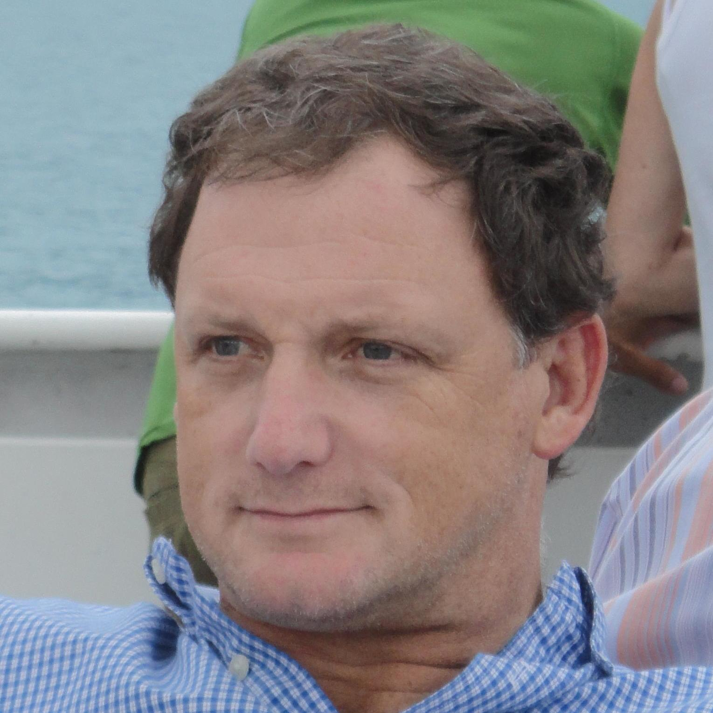
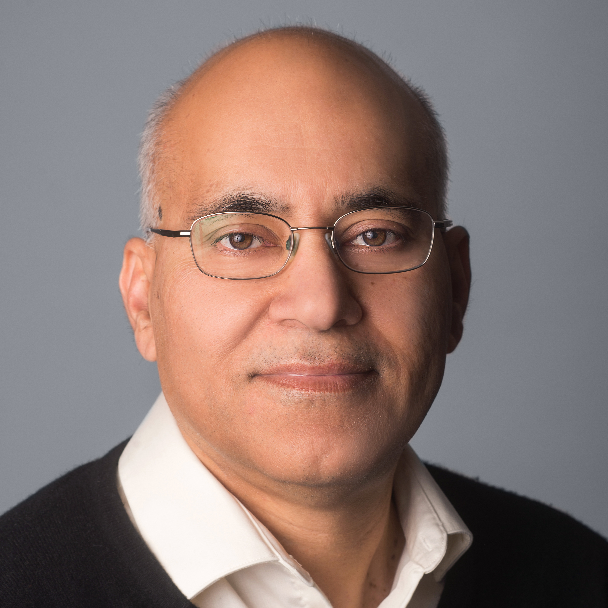
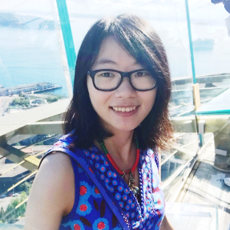
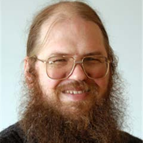

3D Scene Understanding for Vision, Graphics, and Robotics
CVPR 2019 Workshop, June 17, Long Beach, CA
Invited Speakers
|  |  |
||
| Dieter Fox (UW) | Sanja Fidler (U Toronto) | Thomas Funkhouser (Princeton) | Abhinav Gupta (CMU) |
 |
 |  |
|
| Leonidas Guibas (Stanford) | Vladlen Koltun (Intel) | Jitendra Malik (UCB) | Matthias Nießner (TUM) |
Introduction
Tremendous efforts have been devoted to 3D scene understanding over the last decade. Due to their success, a broad range of critical applications like 3D navigation, home robotics, and virtual/augmented reality have been made possible already, or are within reach. These applications have drawn the attention and increased aspirations of researchers from the field of computer vision, computer graphics, and robotics.
However, significantly more efforts are required to enable complex tasks like autonomous driving or home assistant robotics, which demand a deeper understanding of the environment compared to what is possible today. Such a requirement is because these complex tasks call for an understanding of 3D scenes across multiple levels, relying on the ability to accurately parse, reconstruct and interact with the physical 3D scene, as well as the ability to jointly recognize, reason and anticipate activities of agents within the scene. Therefore, 3D scene understanding problems become a bridge that connects vision, graphics and robotics research.
The goal of this workshop is to foster interdisciplinary communication of researchers working on 3D scene understanding (computer vision, computer graphics, and robotics) so that more attention of the broader community can be drawn to this field. Through this workshop, current progress and future directions will be discussed, and new ideas and discoveries in related fields are expected to emerge.
Specifically, we are interested in the following problems:
- Datasets: What is a desired yet manageable breadth for a dataset to serve various tasks at the same time and provide ample opportunities to combine problems?
- Representations: What are representations most suitable for a particular task like reconstruction, physical reasoning, etc.? Can a single representation serve all purposes of 3D scene understanding?
- Reconstruction: How to build efficient models which parse and reconstruct the observation from different data modalities (RGB, RGBD, Physical Sensor)?
- Reasoning: How to formulate reasoning about affordances and physical properties? How to encode, represent and learn common sense?
- Interaction: How to model and learn the physical interaction with objects within the scene?
- Bridge of the three fields: How to facilitate research to connect among vision, graphics, and robotics via 3D scene understanding?
Organizers
|  |  |
||
| Siyuan Huang* (UCLA) | Chuhang Zou* (UIUC) | Hao Su (UCSD) | Alexander Schwing (UIUC) |
 |
|||
| Shuran Song (Princeton) | Siyuan Qi (UCLA) | Yixin Zhu (UCLA) |
Senior Organizers
|  |  |
|
| David Forsyth (UIUC) | Leonidas Guibas (Stanford) | Song-Chun Zhu (UCLA) |